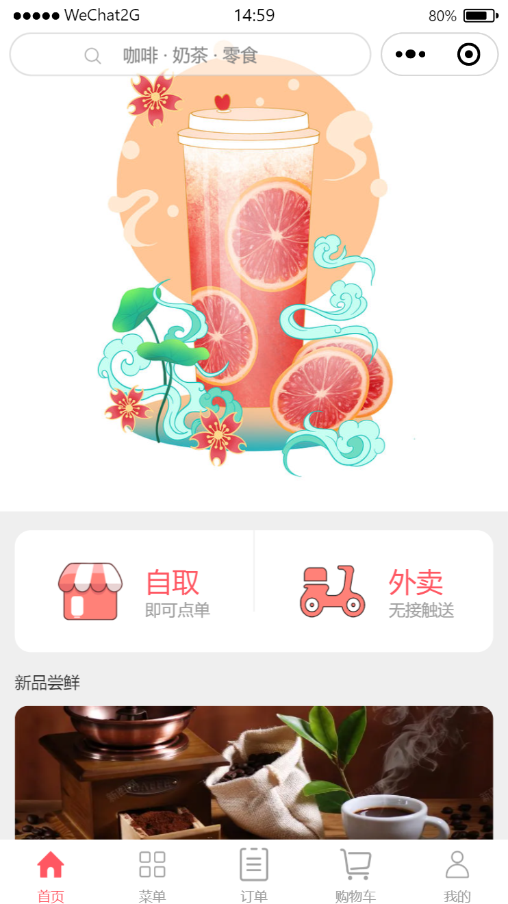
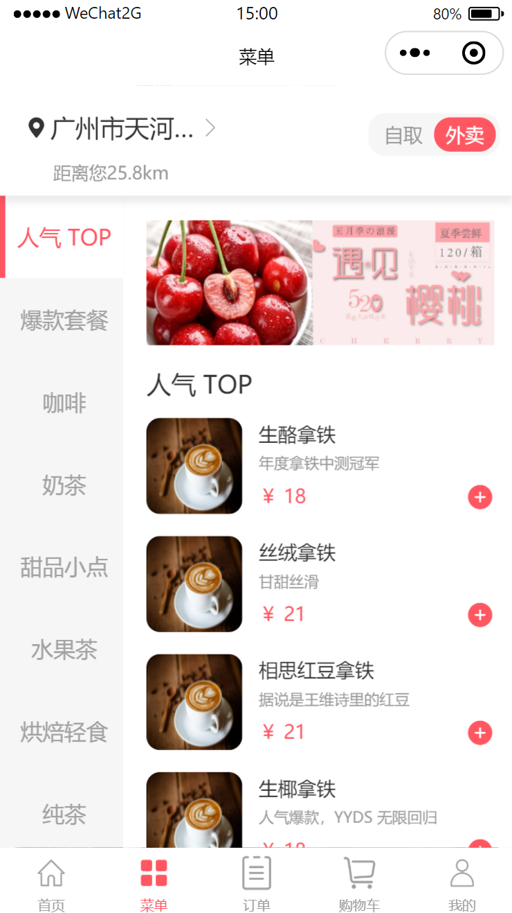
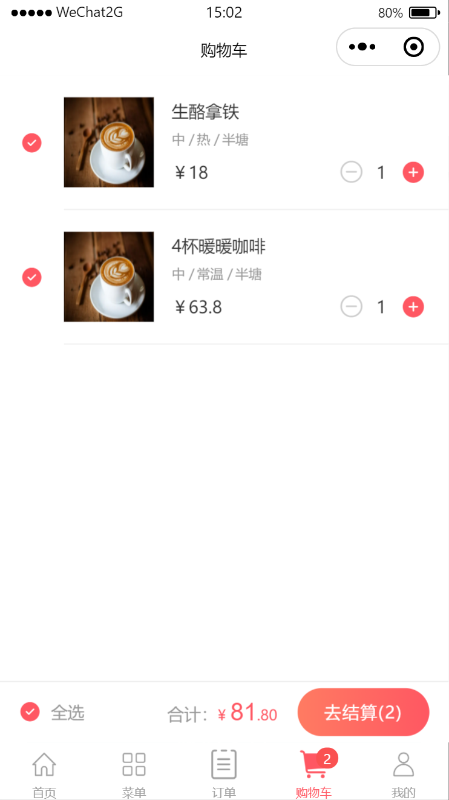
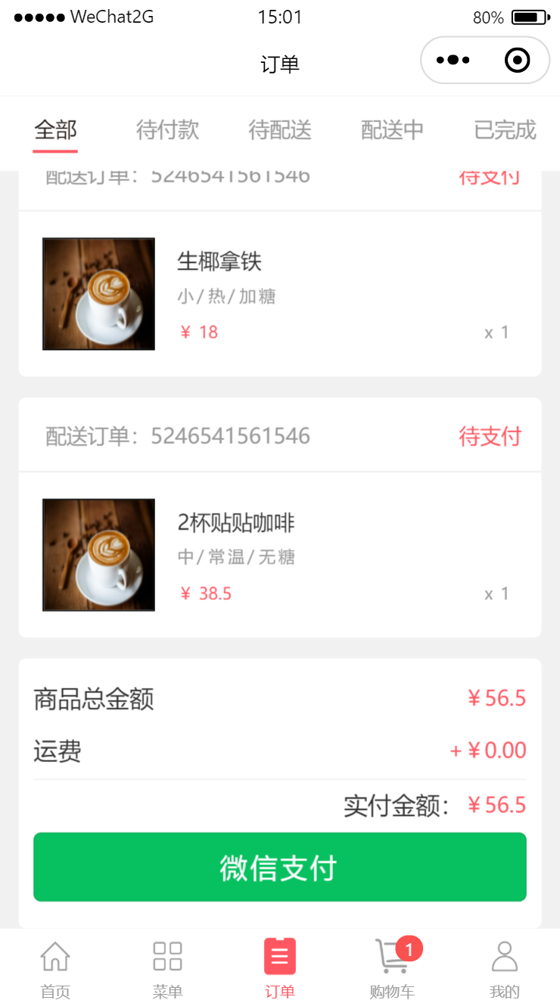
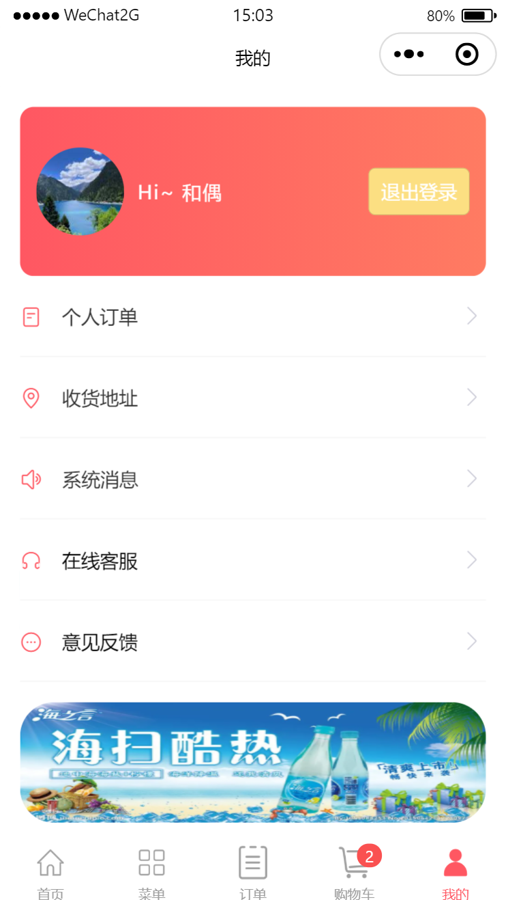

效果
    项目创建过程
准备工作
- 将项目的通用样式写在
app.wxss中- 在根目录
page下设置主题色、字号、字体颜色等 - 注意：
page要设置min-height=100%;才会占满屏幕
- 在根目录
- 清除常用组件的自带样式
- 将外边距、内边距都设置为0
- 将组件都设置为怪异盒模型
- 新建
src文件夹，用于存放不可动态获取的图片、图标 - 新建
component文件夹，用于存放自定义组件 - 自定义
icon组件，实现icon图标的复用- 新建
iconfont文件夹，保存图标wxss文件 - 单独存放有利于随时替换
- 新建
order-online
├─ .eslintrc.js
├─ app.js
├─ app.json
├─ app.wxss
├─ component
│ └─ icon
│ ├─ icon.js
│ ├─ icon.json
│ ├─ icon.wxml
│ └─ icon.wxss
├─ iconfont
│ └─ iconfont.wxss
├─ pages
│ └─ index
│ ├─ index.js
│ ├─ index.json
│ ├─ index.wxml
│ └─ index.wxss
├─ project.config.json
├─ project.private.config.json
├─ sitemap.json
├─ src
│ └─ icon
│ ├─ cart.png
│ ├─ index.png
│ ├─ menu.png
│ ├─ order.png
│ ├─ selected-cart.png
│ ├─ selected-index.png
│ ├─ selected-menu.png
│ ├─ selected-order.png
│ ├─ selected-user.png
│ ├─ takeBySelf.png
│ ├─ user.png
│ └─ waimai.png
└─ utils
└─ util.js
首页
基础准备
- 需要实现的效果
- 在顶部搜索框，输入产品名，可跳转到对应产品
- 选择取餐方式后，跳转到菜单页，并保存取餐方式
- 点击新品图片，可跳转到对应产品
- 难点
顶部导航与胶囊按钮对齐
- 自定义导航
navigation - 实现不同机型和开发工具的适配
- 自定义导航
搜索后跳转到对应产品==(需补充)==
第一步：实现tabBar
- 根据项目需要，确认使用原生
tabBar - 创建对应页面的文件
- 下载
tabBar图标，存放至src/icon文件夹 - 在
app.json里进行配置
第二步：自定义导航栏，并处理兼容性
参考微信开发者社区回答：https://developers.weixin.qq.com/community/develop/article/doc/000aa842274d58cb15f74f81f56013
- 新建
navigation-bar组件构建自定义导航栏- 菜单页引入该组件
navigation-bar组件内：
实现对齐和适配的思路：
- 正常来讲，
iOS和Android下的胶囊按钮的位置以及大小都是相同且不变的，我们可以通过胶囊按钮的位置和大小再配合wx.getSystemInfo或者wx.getSystemInfoSync中得到的statusBarHeight来计算出导航栏的位置和大小。- 顶部导航区，包括状态栏、导航栏(导航条+胶囊)，都设置固定定位
实现步骤：
首先需要知道不同
iOS和Android下的胶囊按钮的位置以及大小- 根据开发者的文档可知(非官方数据，自己进行微调)：
// iOS top 4px right 7px width 87px height 32px // Android top 8px right 10px width 95px height 32px // 开发者工具模拟器（iOS） top 6px right 10px width 87px height 32px // 开发者工具模拟器（Android） top 8px right 10px width 87px height 32px- 这里
top的值是从statusBarHeight作为原点开始计算的 - 因此最终位置还得加上状态栏的高度
通过
wx.getSystemInfoSync可以得到状态栏statusBarHeight的位置和宽高- 状态栏的宽度也就是可使用窗口宽度(手机屏幕宽度)
计算导航条的位置和大小
- 导航条要和胶囊平齐，所以：
- top=胶囊的top
把胶囊离右边框的距离作为导航条的内边距
- left=0
- 宽度=可使用窗口宽度-胶囊右边距-胶囊宽度-导航条内边距=可使用窗口宽度-胶囊宽度-胶囊右边距*3
注意：胶囊的top是以状态栏为原点，但导航条是以屏幕左上角为原点
- height=胶囊的height
计算整个导航栏(导航条+胶囊)的位置和大小
- top=状态栏的高度
- left=0
- 宽度=可使用窗口宽度
- 高度=
胶囊的height+胶囊的上外边距*2=(胶囊的top-状态栏高度)*2+胶囊的height
格式化
- 前面的得到的所有数据都是对象的形式
- 而在页面上设置样式时，要在标签里用
style=""的方式 - 所以要把对象格式的数据，转为成字符串
formatStyle(position) { //声明一个数组，存放遍历出来的数据，加px let styles = [] for (let key in position) { styles.push(`${key}: ${position[key]}px;`) } // 将数组转成字符串，把逗号替换成空格 return styles.join(' ') }- 因为
wx.getSystemInfoSync()得到的可使用窗口宽度，单位是px
第三步：搜索框
- 提高顶部导航区的层级，否则就会被
swiper覆盖 - 搜索图标的显隐：在输入时，搜索图标自动消失
- 给输入框绑定
bind:input事件，在data里设置一个变量iconShow来控制图标的显隐
第四步：顶部的swiper与底部banner区
swiper使用swiper与swiper-item结合实现banner区的跳转==(需补充)==
第五步 取餐方式跳转
- 思路
- 选择取餐方式之后进入菜单页面
- 菜单页面会根据点进来的方式，显示外卖还是自取，所以从首页跳转到菜单页必须携带参数
- 根据之前学习过的声明式导航和编程式导航可知，这两种方式在跳转到
tabBar页面时，不能携带参数
解决方案：
参考回答
- 全局变量：通过
App全局对象存放全局变量- 数据缓存：通过存储到数据缓存中。
- 事件通信：通过事件通信通道。
wx.reLaunch(Object object)，url路径后可以带参数，参数与路径之间使用?分隔
数据动态化

- 单独配置发起网络请求的方法(全局可使用)
新建
config文件- 新建
api.js文件，保存服务器接口根地址 - 新建
exception-message文件，保存错误码字典
- 新建
在
utils文件夹中- 新建
wxToPromise文件，用于转换原生不支持Promise的官方API - 新建
http文件request方法：用于通过wxToPromise获得带有数据的promise对象，并进行错误信息比对_showError方法，如果发生请求错误，用于在页面展示错误信息
- 新建
- 新建
model文件夹- 新建
Home类，用于获取首页数据
- 新建
菜单页
基础准备
- 需要实现的效果
- 获取离自己最近的店及距离(需要申请
wx.getLocation接口) - 点击左侧菜单栏，可获取对应分类的产品
- 点击产品，可选择产品规格、数量等
- 加入购物车后，其他页面的变化
- 难点
- 左侧导航与右侧商品的关联
- 选品框：产品规格的选择、价格与数量联动、所选信息在其他页面上的使用
- 取消整个页面的滚动条：在
json中配置”disableScroll”: true`
数据动态化
- 新建
Menu模块，获取菜单页数据 - 其他与首页类似
页面布局
- 顶部
- 为了将它固定在顶部，不随页面滚动，使用粘性定位
- 右侧的取餐方式，根据参数选中，默认为外卖
- 创建变量
takeWayIndex保存参数 - 在
onLoad生命周期函数里通过options获取首页传来的参数 - 注意！：只有点击首页的选择框跳转，
options才会获取参数，但，如果首次加载是直接点击tabBar到菜单页，那options就是一个空对象{} - 因此只在
options不为空对象时，修改takeWayIndex - 要使用
(JSON.stringify(options) === "{}")进行判断；携带了参数时，options也是对象，所以不能通过数据类型判断
- 创建变量
- 下方商品列表
- 为了实现竖向滚动，左右都设为
scroll-view - 左侧分类及右侧
banner：动态获取数据，列表渲染 - 左侧选中状态：
- 创建一个变量
navLeftIndex表示当前选中分类的索引， - 绑定点击事件，使用自定义属性将当前被点击的分类下标传入，修改
navLeftIndex； - 只有当
navLeftIndex===index时，被选中样式才会生效 - 为了不让选中标识影响文字，我给每个分类都设置了
divider，选中时，只改变颜色
- 创建一个变量
- 右侧商品栏
- 顶部
banner - 动态渲染商品列表
- 如何点击左侧分类，右侧获取对应商品
- 定义变量
navLeftIndex保存左侧被点击分类的索引 - 左侧被点击时，通过自定义属性修改
navLeftIndex变量 - 右侧产品在进行列表渲染，根据
navLeftIndex获取商品数据
选品页
基础准备
- 新建组件
product-detail，作为点击商品列表时打开的选品页 - 父页面：菜单页
- 需引入的子组件：图标组件
icon、数量组件cartNum- 数量组件也引用了图标组件
icon
- 数量组件也引用了图标组件
- 新建组件
难点：
- 获取所点击的产品数据，并列表渲染嵌套了三层的数据
- 规格选择
- 金额与数量的联动，以及在其他页面的使用
- 商品加入购物车后，对其他页面的影响
本页面需要实现的效果及方法
选品页的打开与关闭
- 在父页面定义一个变量
detailFlag，作为开关，默认为true；通过属性绑定将detailFlag传给组件 - 当父页面的产品发生点击事件时，将
detailFlag修改为false - 组件的父容器
container通过hidden属性来控制显隐 - 组件页面的关闭按钮，在被点击时，将
detailFlag修改为true
- 在父页面定义一个变量
页面数据的动态化
- 在父页面的产品被点击时，保存该产品的
id - 在
Menu模块里，写一个静态方法，获取商品详情数据，保存在detailInfo变量里 - 通过属性绑定将该商品的数据传给组件，这样组件接收到的数据就是每次点击的商品数据了
- 使用
Mustache语法将数据绑定到页面 - 注意产品规格的数据渲染，可定义
wx:for-item=""来区分子项：- 产品数据的
specs里有三个规格 - 不同规格下有对应id和
specsDesc specsDesc放置的是不同的选择项及其id
- 产品数据的
- 在父页面的产品被点击时，保存该产品的
商品规格的选择
我踩过的坑
- 一开始我选择的是
navLeftIndex===index的方法，发现每个规格都会同时选中同一个选项
- 一开始我选择的是
解决办法：

- 选中条件：选项的
isActive为true；- 而
isActive在接口里已经定义了，也有默认选项；因此，需要改变页面所渲染的数据detailInfo- 如何改变？
- 在点击规格选项时，将当前选项的id、当前规格的id、当前规格的所有数据都传到
js里- 在点击事件的事件处理函数里，for循环遍历当前规格的所有数据，先将所有选项的
isActive改为false，再根据选项id，将该选项的isActive改为true- 遍历
detailInfo，根据当前规格的id找到该规格下的数据，替换成前面修改过的；再将修改后的detailInfo更新到页面中
- 商品金额与数量的联动
- 数量的增减使用的是另一个组件
先分析下逻辑
- 在产品点击后，数量默认为最小值1，此时选品框里的金额，就等于产品的单价
- 当数量增减时，金额等于单价*数量
思路：
- 数量组件需要通过事件绑定的方式将数量传给选品组件
- 选品组件定义一个变量
num保存从子组件接收的值- 选品组件定义一个变量
totalMoney保存金额，默认为0，使用三元运算，当它为0时，页面使用接口里的值- 和数量组件绑定的事件处理函数中，根据传来的
num修改金额这样金额就和数量绑定在了一起，但存在以下问题：
问题：
- 关闭选品框后，再打开另一产品，金额和数量不变
解决方法：
- 在关闭按钮的点击事件中，将金额重置为0，这样页面就会使用原始数据；将数量重置为最小值
- 数量组件的优化
优化1：当数量达到边界值时，不再改变，且颜色变灰，表示不能再点击
- 去掉图标组件的默认颜色，只声明类型(否则替换不了颜色，优先级太高)
- 父组件如何改变子组件的样式类？使用外部样式类
- 在子组件中的
js文件里用externalClasses定义外部样式类名，并写入对应标签的class中 - 父组件就可以直接在标签中用
外部样式类名="类名"的方式定义样式 - 当数量超过临界值时，就改变样式
- 在子组件中的
优化2：点击事件的触发
- 尝试1：使用
pointer-events: none;发现无效，确认是小程序不支持该属性- 尝试2：定义一个变量
isHandleClick作为开关
- 只在
isHandleClick为true时才能点击- 当
num超过某一边的边界值时，isHandleClick变为false，不能再点击了，但！另一边的按钮也同时不能点击了- 尝试3：定义两个变量：
isAddClick和isMinClick
- 这两个变量分别控制增加和减少按钮
- 和前面一样，当关闭选品页时，变量要重置，因此把这两个变量定义在选品组件里，通过属性绑定的方式传给数量组件
- 在增减按钮的点击事件函数中，根据临界值修改变量
Storage本地存储
商品在选品时，加入购物车后，其他页面要显示对应的商品信息
因此需要将加入购物车的商品信息存在本地存储中
统一封装storage
- 在
utils文件夹里，创建storage.js文件
- 在
/**
* 微信小程序标准版：统一封装的 storage 操作类
*/
class Storage {
//类数组，通过[属性]的方式调用
types = {
1: 'get', // get
2: 'set', // set
3: 'rm' // rm
}
/**
* 检验本地存储 key 是否合法
* @param {String} key | 要操作的键值
* @param {Number} type | 类型，是 get set rm
* @param {Boolean} emptyFlag | 是否判断为空情况，默认判断 true，false 为不判断
*/
checkKeyType(key, type, emptyFlag = true) {
if (typeof key != 'string') {
throw new Error(`Storage ${this.types[type]} func: key must be string`)
return false
}
if (emptyFlag) {
let tmpKey = key.TrimStr()
if (tmpKey == '') {
throw new Error(`Storage ${this.types[type]} func: key can not be empty`)
return false
}
return tmpKey;
}
return key
}
/**
* get方法 从本地缓存中获取指定key的值
* @param {String} key | 要操作的键值
* @param {Boolean} syncFlag | 同步状态，默认 false (异步)，true 为同步
*/
get = (key, syncFlag = false) => {
const tmpKey = this.checkKeyType(key, 1)
if (tmpKey) {
const errMsg = 'Storage get: failed to get data'
return new Promise((resolve, reject) => {
if (syncFlag) {
let res = wx.getStorageSync(tmpKey)
if (res) {
resolve(JSON.parse(res))
} else {
reject(errMsg)
}
} else {
wx.getStorage({
key: tmpKey,
success: (res) => {
resolve(JSON.parse(res.data))
},
fail: (err) => {
reject(errMsg)
}
})
}
})
}
}
/**
* 将数据保存在本地存储的指定key中 会覆盖掉原来该 key 对应的内容
* @param {String} key | 要操作的键值
* @param {*} data | 要存储的值，会转换为 JSON 串进行存储
* @param {Boolean} syncFlag | 同步状态，默认 false (异步)，true 为同步
*/
set = (key, data, syncFlag) => {
const tmpKey = this.checkKeyType(key, 2)
if (tmpKey) {
const sucMsg = 'Storage set: set data successfully'
const errMsg = 'Storage set: failed to set data'
return new Promise((resolve, reject) => {
let tmpData = JSON.stringify(data)
if (syncFlag) {
try {
wx.setStorageSync(tmpKey, tmpData)
resolve(sucMsg)
} catch (err) {
console.log(err)
reject(errMsg)
}
} else {
wx.setStorage({
data: tmpData,
key: tmpKey,
success: () => {
resolve(sucMsg)
},
fail: (err) => {
console.log(err)
reject(errMsg)
}
})
}
})
}
}
/**
* 可以移除本地存储中指定key的数据 如果不指定则清除全部数据
* @param {String} key | 要操作的键值，为空则清空所有，有值则清空指定的值
* @param {Boolean*} syncFlag | 同步状态，默认 false (异步)，true 为同步
*/
rm = (key = '', syncFlag = false) => {
let tmpKey = this.checkKeyType(key, 3, false)
tmpKey = tmpKey.TrimStr()
const sucMsg = 'Storage rm: rm data successfully'
const errMsg = 'Storage rm: failed to rm data'
return new Promise((resolve, reject) => {
if (tmpKey == '') {
if (syncFlag) {
try {
wx.clearStorageSync()
resolve(sucMsg)
} catch (err) {
console.log(err)
reject(errMsg)
}
} else {
wx.clearStorage({
success: (res) => {
resolve(sucMsg)
},
fail: (err) => {
console.log(err)
reject(errMsg)
}
})
}
} else {
if (syncFlag) {
try {
wx.removeStorageSync(tmpKey)
resolve(sucMsg)
} catch (err) {
console.log(err)
reject(errMsg)
}
} else {
wx.removeStorage({
key: tmpKey,
success: () => {
resolve(sucMsg)
},
fail: (err) => {
console.log(err)
reject(errMsg)
}
})
}
}
})
}
}
/**
* 清除字符串前后的空格
*/
String.prototype.TrimStr = function () {
return this.replace(/(^\s*)|(\s*$)/g, '');
}
export {
Storage
}
- 使用：
- 在
app.js顶部引入并注册 App 上
- 在
// app.js
import { Storage } from './utils/storage'
const storage = new Storage();
App({
storage,
getStorage: storage.get,
setStorage: storage.set,
rmStorage: storage.rm,
...省略
})
- 在页面中使用
// component/product-detail/product-detail.js
//获取应用实例
const app = getApp()
Component({
//app打点的方式调用
})
加入购物车(详情页)
- 实现效果
- 当用户选择商品数量，点击添加购物车后，能将该商品信息及选择数量保存在缓存中，使其他页面也能得到该数据
- 交互效果：弹出提示框，超过库存或添加成功
- 徽标：商品添加购物车后，购物车的tabBar部分会出现相应的数量
- 难点
- 相同的
key保存的数据会被覆盖 - 数量组件、选品页面、购物车页面之间的数据传递
- 实现步骤
给
加入购物车按钮添加点击事件变量
selectNum，用于保存当次选择的数量，即数量组件传过来的值变量
numInCart，用于当前产品已添加的总数- 以上两个字段都要添加到
storage里面，设置两个变量的目的在于：重复添加同一产品时，numInCart保存着上一次添加的数量，selectNum为本次添加的数量，需要相加后更新到numInCart中，作为总数
- 以上两个字段都要添加到
用
cartInfo作为key值，在本地存储中保存购物数据由于同一key的数据会被覆盖，而商品数据不止一条；因此，把商品数据都放入数组中，新数据
push进数组在更新
cartInfo时，会遇到三种情况- 第一种，第一次添加时，
storage中没有cartInfo数据- 为
detailInfo添加numInCart字段，表示添加商品的总数，就等于selectNum - 声明一个空数组，并将
detailInfo存进数组 - 使用
setStorage方法，将数组加入本地缓存
- 为
- 第二种，
cartInfo已经有该商品 - 第三种，
cartInfo没有该商品
- 第一种，第一次添加时，
后面两种情况：
- 首先需要判断是否已经存过
- 声明一个变量作为标志
isExist，默认为false，表示缓存中没有该商品 - 获取缓存中的
cartInfo，并进行遍历 - 将缓存中数据的id与当前商品的id进行对比，如果相等就将
isExist修改为true
- 声明一个变量作为标志
isExist为true，存在同一产品：- 将两次添加的数量相加
- 判断库存，如果不超过库存，就添加进
storage，超过了就提示
isExist为false，没存过：- 更新
numInCart - 判断库存，如果不超过库存，就添加进
storage，超过了就提示
- 更新
- 首先需要判断是否已经存过
- 购物车的徽标
效果：
- 初始化时，并没有徽标
- 商品加入购物车后，徽标显示当前添加的商品数量(不是杯数)
什么时候更新徽标数据
- 用户在关闭详情页时，此时已成功加入购物车
- 整个小程序在启动时，需要先获取本地存储中是否有数据
- 当数据存储在本地缓存中指定的key中，除非用户主动删除或因存储空间原因被系统清理，否则数据都一直可用
- 切换到购物车页面时，要获取最新数据
购物车页面
基础准备
- 数据来源：本地缓存
storage - 效果：
- 展示已选择商品的名称、价格、规格、数量等信息
- 商品结算时，金额与数量之间的联动、跳转到订单页结算
- 滑动删除商品
- 难点
- 单选/全选商品时，总金额与数量之间的逻辑处理
购物车布局
- 商品列表布局
- 拿到
storage里的数据，遍历数据 - 规格需要三层遍历，分隔线
/用伪元素做 - 选择按钮：给商品数据添加
selected字段，用wx:if和wx:else控制显隐
- 拿到
细节：
- 用户可以直接在购物车页面修改数量，因此需要保存修改后的值，更新页面
- 当页面隐藏/切换时，要获取购物车页面的最新数据，并更新到
cartInfo中
空购物车界面
- 单独封装成自定义组件，实现复用
底部提交订单栏和滑动删除按钮
布局实现：使用vant组件
- 初始化
npm -y- 安装npm包：
npm i @vant/weapp -S --production- 将
app.json中的"style": "v2"去除- 打开微信开发者工具，点击 工具 -> 构建
npm- 在页面的
json文件中引入组件
"usingComponents": {
"van-swipe-cell": "@vant/weapp/swipe-cell/index",
"van-submit-bar": "@vant/weapp/submit-bar/index"
}
- 根据对应文档使用组件
底部提交订单栏——js逻辑
- 效果
- 点击全选，可实现全选/全不选购物车中所有商品
- 总金额会随选中的商品及其数量的变化而变化
- 结算的数量由
selected字段决定
- 思路：
全选
- 声明一个变量
selectedAll，作为全选的标识，默认为false，即没有全选 - 在全选按钮的点击事件中
- 如果
selectedAll为false，那就遍历购物车中所有商品，将selected字段都修改成true；修改完之后，再将selectedAll改为true，也就是已经全选了 - 在下一次点击时，看到
selectedAll为true，就将购物车中所有商品的selected字段都修改成false，再将selectedAll改为false，这样就能实现全不选 - 更新总金额和选择数量
- 如果
单选
- 拿到当前点击的商品数据，添加
selected字段，并且值为相反值cartInfo[index].selected = !cartInfo[index].selectedselected默认为false，这样既添加了新字段，又实现了两次点击的值相反- 更新总金额和选择数量
细节：
- 选中商品的数量为0时，结算按钮为灰色，不能点击；用三元运算符控制
- 声明一个变量
总金额和选择数量
- 由于单选或全选时都要更新总金额，因此单独定义一个方法
_updataMoney- 声明一个变量
payMoney，保存总金额- 每次调用该方法，都会将
cartInfo遍历一次，计算所有selected等于true的数据的 总金额和数量- 定义一个变量
isSelectedAll，作为全选标志，默认为true
- 在遍历
cartInfo时，任一商品的selected等于false，isSelectedAll就变成false，表示没有全选，因此将selectedAll修改为false- 在遍历完之后，如果
isSelectedAll仍为true，就表示单选了购物车中所有商品，此时全选按钮应该亮起，因此将selectedAll修改为true- 更新
cartInfo和本地缓存
滑动删除
- 根据文档，使用
vant组件进行布局- 给删除按钮添加点击事件，用自定义属性传递索引
- 根据索引，找到当前点击的商品数据，把它从
cartInfo数组中删除- 调用方法更新总金额
- 更新缓存
去结算
- 声明一个空对象
acountData保存要传递给订单页的数据- 在结算按钮的点击事件中，将所有被选中的商品保存到一个空数组中
- 将总金额和结算数组保存到
acountData对象中- 将
acountData作为新的key存入本地缓存，订单页可以通过该key获取数据- 跳转到订单页
订单页
效果
- 滑动/点击切换tabs标签可查看不同状态的订单
- 付款
难点
- 通过
WXS和节流函数优化频繁划动切换带来的性能问题 - 支付成功后，删除购物车中的商品
布局
- 顶部分类栏
- 加入购物车的商品动态渲染
- 空订单时的界面：复用组件
实现tabs标签的切换
- 原理
- 在点击/滑动事件中，将目标索引传入js中，保存在
currentTabIndex中，当tabs标签的索引等于currentTabIndex时，激活选中样式 - 最重要的是传入目标索引，点击切换比较简单
滑动切换
思路- 在视图层
wxml、wxs中处理touchmove事件，在处理完成之后，再将事件的结果传给逻辑层 - 控制灵敏度：计算手指触摸开始和结束的距离，当该距离在一定范围内时，再向逻辑层传递结果
- 在视图层
节流优化
- 在接收滑动/点击事件传来的
index时，引入节流函数，控制执行频率
与购物车页面相关
点击结算之后删除商品
- 循环遍历加入本地缓存中的
acountList数组，与cartInfo数据进行对比，删除相同数据，更新缓存和页面的cartInfo
- 循环遍历加入本地缓存中的
acountData的调整- 如果用户分几次结算商品，那么为了不覆盖前面的数据
- 应该先获取缓存中的商品数组和金额，然后将本次的商品
push进去，计算总金额时也要加上前面的，最后更新缓存
个人中心
布局
- 创建两种状态的登录框
- 下方的列表在登录状态不同时，也应该不一样
开放能力
- 微信官方有在线客服和意见反馈的功能
- 将
button组件open-type的值设置为contact，当用户点击后就会进入客服会话 - 将
button组件open-type的值设置为feedback，当用户点击后就会打开“意见反馈”页面，用户可提交反馈内容并上传日志
授权登录——云开发
步骤：
使用
wx.getUserProfile获取用户头像和昵称创建云开发环境
- 在项目根目录
project.config.json项目配置文件中，初始化配置云函数的文件夹的目录 - 在项目根目录中，新建
cloud文件夹，并选择项目对应的环境
- 在项目根目录
初始化
- 在云开发控制台中，创建数据表
users用于存储用户信息 - 在
cloud文件夹上右键 -> 选择”新建Node.js云函数”，输入云函数名称login即可新建成功 - 在小程序
app.js中初始化云函数 - 上传并部署云函数(每次修改云函数都要重新上传)
- 在微信端调用云函数，将
wx.getUserProfile获取的用户头像和昵称等用户信息传给后端，用于生成用户账号
- 在云开发控制台中，创建数据表
在
cloud/login/index.js中编写根据openId查询用户信息的方法，根据查询返回的数组的长度来决定下一步是注册还是登录注册用户账号
- 在
cloud/login/index.js云函数中完成用户信息的注册，在数据库中新增用户数据 - 当用户注册成功后，根据 ID 快速查询当前用户的信息，并返回给前端
- 上传并部署云函数
- 在
实现登录逻辑
- 如果已经注册，就可以返回根据
openId到的查询用户信息
- 如果已经注册，就可以返回根据
小程序页面逻辑
- 获取登录后的数据，并将数据库中真实的用户信息同步到本地存储中，做数据的持久化
- 当页面切换时，实时获取最新的用户数据
- 注意：要在云开发控制台中，修改数据库的权限，选择所有用户可读